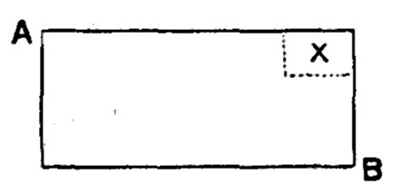
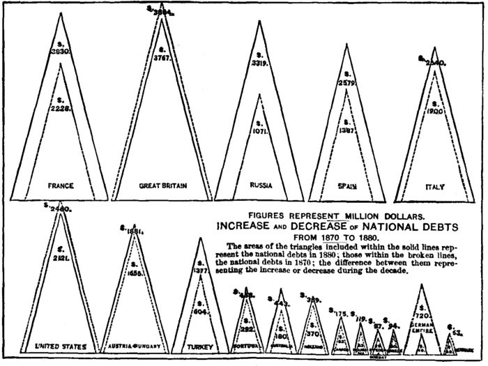

Chapter 47: Of A National Debt¶
47.1 § 1. Is it desirable to defray extraordinary public expenses by loans?¶
The question must now be considered, how far it is right or expedient to raise money for the purposes of government, not by laying on taxes to the amount required, but by taking a portion of the capital of the country in the form of a loan, and charging the public revenue with only the interest.
This question has already been touched upon in the First Book.1 We remarked, that if the capital taken in loans is abstracted from funds either engaged in production, or destined to be employed in it, their diversion from that purpose is equivalent to taking the amount from the wages of the laboring-classes. Borrowing, in this case, is not a substitute for raising the supplies within the year. A government which borrows does actually take the amount within the year, and that too by a tax exclusively on the laboring-classes, than which it could have done nothing worse, if it had supplied its wants by avowed taxation; and in that case the transaction, and its evils, would have ended with the emergency; while, by the circuitous mode adopted, the value exacted from the laborers is gained, not by the state, but by the employers of labor, the state remaining charged with the debt besides, and with its interest in perpetuity. The system of public loans, in such circumstances, may be pronounced the very worst which, in the present state of civilization, is still included in the catalogue of financial expedients.
We, however, remarked that there are other circumstances in which loans are not chargeable with these pernicious consequences: namely, first, when what is borrowed is foreign capital, the overflowings of the general accumulation of the world; or, secondly, when it is capital which either would not have been saved at all, unless this mode of investment had been open to it, or, after being saved, would have been wasted in unproductive enterprises, or sent to seek employment in foreign countries. When the progress of accumulation has reduced profits either to the ultimate or to the practical minimum—to the rate less than which would either put a stop to the increase of capital, or send the whole of the new accumulations abroad—government may annually intercept these new accumulations, without trenching on the employment or wages of the laboring-classes in the country itself, or perhaps in any other country. To this extent, therefore, the loan system may be carried, without being liable to the utter and peremptory condemnation which is due to it when it overpasses this limit. What is wanted is an index to determine whether, in any given series of years, as during the last great war, for example, the limit has been exceeded or not.
Such an index exists, at once a certain and an obvious one. Did the Government, by its loan operations, augment the rate of interest? If it only opened a channel for capital which would not otherwise have been accumulated, or which, if accumulated, would not have been employed within the country, this implies that the capital, which the Government took and expended, could not have found employment at the existing rate of interest. So long as the loans do no more than absorb this surplus, they prevent any tendency to a fall of the rate of interest, but they can not occasion any rise. [But] To the full extent to which the loans of government, during the war, caused the rate of interest to exceed what it was before, and what it has been since, those loans are chargeable with all the evils which have been described. If it be objected that interest only rose because profits rose, I reply that this does not weaken, but strengthens, the argument. If the Government loans produced the rise of profits by the great amount of capital which they absorbed, by what means can they have had this effect, unless by lowering the wages of labor? It will, perhaps, be said that what kept profits high during the war was not the drafts made on the national capital by the loans, but the rapid progress of industrial improvements. This, in a great measure, was the fact; and it, no doubt, alleviated the hardship to the laboring-classes, and made the financial system which was pursued less actively mischievous, but not less contrary to principle. These very improvements in industry made room for a larger amount of capital; and the Government, by draining away a great part of the annual accumulations, did not indeed prevent that capital from existing ultimately (for it started into existence with great rapidity after the peace), but prevented it from existing at the time, and subtracted just so much, while the war lasted, from distribution among productive laborers. If the Government had abstained from taking this capital by loan, and had allowed it to reach the laborers, but had raised the supplies which it required by a direct tax on the laboring-classes, it would have produced (in every respect but the expense and inconvenience of collecting the tax) the very same economical effects which it did produce, except that we should not now have had the debt. The course it actually took was therefore worse than the very worst mode which it could possibly have adopted of raising the supplies within the year; and the only excuse, or justification, which it admits of (so far as that excuse could be truly pleaded) was hard necessity; the impossibility of raising so enormous an annual sum by taxation, without resorting to taxes which from their odiousness, or from the facility of evasion, it would have been found impracticable to enforce.2
When government loans are limited to the overflowings of the national capital, or to those accumulations which would not take place at all unless suffered to overflow, they are at least not liable to this grave condemnation. In this case, therefore, the question really is, what it is commonly supposed to be in all cases—namely, a choice between a great sacrifice at once, and a small one indefinitely prolonged. On this matter it seems rational to think that the prudence of a nation will dictate the same conduct as the prudence of an individual; to submit to as much of the privation immediately as can easily be borne, and, only when any further burden would distress or cripple them too much, to provide for the remainder by mortgaging their future income. It is an excellent maxim to make present resources suffice for present wants; the future will have its own wants to provide for. On the other hand, it may reasonably be taken into consideration that, in a country increasing in wealth, the necessary expenses of government do not increase in the same ratio as capital or population; any burden, therefore, is always less and less felt; and, since those extraordinary expenses of government which are fit to be incurred at all are mostly beneficial beyond the existing generation, there is no injustice in making posterity pay a part of the price, if the inconvenience would be extreme of defraying the whole of it by the exertions and sacrifices of the generation which first incurred it.
47.2 § 2. Not desirable to redeem a national Debt by a general Contribution¶
When a country, wisely or unwisely, has burdened itself with a debt, is it expedient to take steps for redeeming that debt? In principle it is impossible not to maintain the affirmative.
Two modes have been contemplated of paying off a national debt: either at once by a general contribution, or gradually by a surplus revenue. The first would be incomparably the best, if it were practicable; and it would be practicable if it could justly be done by assessment on property alone. If property bore the whole interest of the debt, property might, with great advantage to itself, pay it off; since this would be merely surrendering to a creditor the principal sum, the whole annual proceeds of which were already his by law, and would be equivalent to what a land-owner does when he sells part of his estate, to free the remainder from a mortgage. But property, it need hardly be said, does not pay, and can not justly be required to pay, the whole interest of the debt. Whatever is the fitting contribution from property to the general expenses of the state, in the same, and in no greater proportion, should it contribute toward either the interest or the repayment of the national debt. This, however, if admitted, is fatal to any scheme for the extinction of the debt by a general assessment on the community. Persons of property could pay their share of the amount by a sacrifice of property, and have the same net income as before.

If a person owns a property, A B, which returns him $1,000 income, and if he pays $10 a year in taxes as his share of interest on the public debt, suppose that part of his estate represented by X, which returns him annually $10 (and which return he has annually handed over to the state), to be carved out of it, and that he is to be hereafter relieved of his share of taxes. He would then, after having paid the capitalized value (X) of that which was his share of the annual tax to the state on account of the public debt, have the same net income as before; for he was never able to enjoy the income of X.
If those who have no accumulations, but only incomes, were required to make up by a single payment the equivalent of the annual charge laid on them by the taxes maintained to pay the interest of the debt, they could only do so by incurring a private debt equal to their share of the public debt; while, from the insufficiency, in most cases, of the security which they could give, the interest would amount to a much larger annual sum than their share of that now paid by the state. Besides, a collective debt defrayed by taxes has, over the same debt parceled out among individuals, the immense advantage that it is virtually a mutual insurance among the contributors. If the fortune of a contributor diminishes, his taxes diminish; if he is ruined, they cease altogether, and his portion of the debt is wholly transferred to the solvent members of the community. If it were laid on him as a private obligation, he would still be liable to it, even when penniless.
When the state possesses property, in land or otherwise, which there are not strong reasons of public utility for its retaining at its disposal, this should be employed, as far as it will go, in extinguishing debt. Any casual gain, or god-send, is naturally devoted to the same purpose. Beyond this, the only mode which is both just and feasible, of extinguishing or reducing a national debt, is by means of a surplus revenue.
47.3 § 3. In what cases desirable to maintain a surplus revenue for the redemption of Debt¶
The desirableness, per se, of maintaining a surplus for this purpose does not, I think, admit of a doubt.
It is not, however, advisable in all cases to maintain a surplus revenue for the extinction of debt. The advantage of paying off the national debt is, that it would enable us to get rid of the worst half of our taxation. But of this worst half some portions must be worse than others, and to get rid of those would be a greater benefit proportionally than to get rid of the rest. If renouncing a surplus revenue would enable us to dispense with a tax, we ought to consider the very worst of all our taxes as precisely the one which we are keeping up for the sake of ultimately abolishing taxes not so bad as itself. In a country advancing in wealth, whose increasing revenue gives it the power of ridding itself from time to time of the most inconvenient portions of its taxation, I conceive that the increase of revenue should rather be disposed of by taking off taxes, than by liquidating debt, as long as any very objectionable imposts remain. In the present state of England, therefore, I hold it to be good policy in the Government, when it has a surplus of an apparently permanent character, to take off taxes, provided these are rightly selected. Even when no taxes remain but such as are not unfit to form part of a permanent system, it is wise to continue the same policy by experimental reductions of those taxes, until the point is discovered at which a given amount of revenue can be raised with the smallest pressure on the contributors. After this, such surplus revenue as might arise from any further increase of the produce of the taxes should not, I conceive, be remitted, but applied to the redemption of debt. Eventually, it might be expedient to appropriate the entire produce of particular taxes to this purpose; since there would be more assurance that the liquidation would be persisted in, if the fund destined to it were kept apart, and not blended with the general revenues of the state. The succession duties would be peculiarly suited to such a purpose, since taxes paid as they are, out of capital, would be better employed in reimbursing capital than in defraying current expenditure. If this separate appropriation were made, any surplus afterward arising from the increasing produce of the other taxes, and from the saving of interest on the successive portions of debt paid off, might form a ground for a remission of taxation.
The relative amount of the United States public debt may be seen, by Chart No. XXII, from an early date down to 1880. Since the war, the surplus revenue of the United States has been constantly appropriated for the payment of the public debt incurred during the late war, until, what with the reduction of debt and the fall in the interest charge, our income is now so much greater than expenditure that we are (1884) actually in difficulties owing to the surplus. To the present time the Treasury has been able to use its excess of receipts in redeeming matured debt; but the rapidity of the payment has been such that in two years or more no matured debt will exist to be redeemed: $250,000,000 of 4-½ per cent bonds remain, but they do not fall due until 1891; and the 4 per cent bonds to the amount of $737,620,700 do not mature until 1907. Having once raised a large revenue under war pressure, it seems very difficult for people to understand now why heavy duties were originally levied, and the extraordinary suggestion is often made that the surplus should remain, and new channels of expenditure should be made (such as enormous pensions), simply in order to keep up the heavy taxation. The difficulty is, however, that the unnecessary surplus exists because of customs duties levied for war purposes. But the heavy burden of war taxation ought not to be continued, adding to the cost of production in all industries, without doing a greater wrong than would be done by the passing—and only possible—trouble of a redistribution of capital in a few cases; especially since that distribution of capital will be one from less productive to more productive industries; otherwise, no change would be made.
The condition of foreign debts, and the progress made in their reduction, may be studied in Chart No. XXIII. That of the United States is exceptional. The interest-bearing debt, as given by the last report of the Secretary of the Treasury, 1883, has been reduced to $1,312,446,050, and the reduction is more striking than is indicated in the chart for the year 1880.
